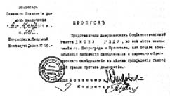

BÖLÜM VI
KURTULUŞ KOMİTESİ


9 Kasım, Cuma...
Novoçerkask, 8 Kasım.
Bolşevik isyanını ve Bolşeviklerin Geçici Hükümet’i devirdiklerini ve Petrograd’da iktidarı ele aldıklarını göz önünde tutan... Kazak hükümeti bu hareketleri canice saydığını ve kesinlikle kabul edilmez bulduğunu ilan eder. Bundan ötürü, Kazaklar bir koalisyon hükümeti olan Geçici Hükümet’e her türlü yardımı yapacaklardır. Bu durum karşısında ve Geçici Hükümet iktidara dönünceye kadar, 7 Kasımdan itibaren, Don bölgesinde iktidarı kendi elime alıyorum.
İmza: Ataman Kaledin
Kazak Askerleri Hükümeti Başkanı
Başbakan Kerenski’nin prikaz’ı... Gaçina’dan gönderilmiş:
Geçici Hükümet’in başkanı ve bütün Rus silahlı kuvvetlerinin en yüksek komutanı olan ben, halen anayurda bağlı bulunan cephedeki alayların başında bulunduğumu ilan ederim.
Yurda ve devrime ihanet edenlerin çağrısına yanlışlıkla ya da kızgınlıkla uymuş olan Petrograd askerî bölgesi birliklerinin gecikmeden görevleri başına dönmelerini emrediyorum.
Bu emir bütün alaylara, taburlara ve bölüklere okunacaktır.
İmza : Geçici Hükümet Başkanı ve Yüksek Komutan
A. F. KERENSKİ
Kuzey Cephesine komuta eden generale Kerenski’den gelen bir telgraf:
Gaçina şehri hükümete bağlı alaylar tarafından kan akıtılmaksızın alınmıştır. Kronştad bahriyelilerinin, Semiyonovski ve İsmailovski Alaylarının müfrezeleri karşı koymaksızın silahlarını teslim ettiler ve hükümet kuvvetlerine katıldılar.
Tespit edilmiş olan birliklerin olabildiği kadar süratle ilerlemelerini emrediyorum: Askerî Devrimci Komite kendi askerlerine çekilme emri vermiştir...
Güney batıda otuz kilometre kadar uzakta bulunan Gaçina, geceleyin düşmüştü. Yukarıdaki telgrafta adı geçen iki alay müfrezesi –aralarında bahriyeliler yok– başlarında yüzbaşıları olmadan şehir dolaylarında gezerlerken Kazaklar tarafından sarılmışlar ve silahlarını teslim etmişlerdi; ancak, hükümet kuvvetlerine katıldıkları doğru değildi. Bunların çoğu şu anda korkmuş ve utanmış bir durumda Smolni’ye kadar gelmişler, durumu anlatıyorlardı. Kazakların o kadar yakında olduklarını bilmiyorlarmış... Kazaklarla konuşmaya çalışmışlar...
Devrimci cephede büyük bir karışıklık görülüyordu. Güneye giden bütün kasabalarda garnizonlar uzlaşmaz ve kesin bir biçimde ikiye ya da üçe bölünmüşlerdi; Yüksek Komutanlık, daha güçlüsü olmadığı için, Kerenski’yi tutuyordu; aşağı kademelerin çoğunluğu sovyetlerden yanaydı. Bunların dışında kalanlarsa oradan oraya geçip duruyorlardı.
Askerî Devrimci Komite Petrograd’ın savunmasını acele olarak Muraviyov’un komutasına bıraktı; yaz aylarında Ölüm Taburları’nı örgütlemiş, muvazzaf, hırslı bir subay olan Muraviyov’un o sıralarda, Bolşeviklere yumuşak davranıldığını, bunların ortadan kaldırılması gerektiğini Geçici Hükümet’e öğütlediği söyleniyordu. Muraviyov kuvvete ve cesarete içtenlikle hayran bir asker olabilirdi...

Komiser
Cezaevleri Merkez Bürosu
6 Kasım 1917, No 213
Petrograd, Smolni Enstitüsü
56 No.lu oda
İZİN BELGESİ
Sosyalist Amerikan basınının temsilcisi JOHN REED’e, Petrograd
ve Kronştat şehirlerindeki bütün hapishaneleri serbestçe ziyaret edebilmesi için,
cezaevlerindeki koşulların genel olarak araştırılması ve toplumsal bilgilendirme
yoluyla, demokrasi karşıtı yalanların gazetelerce yayılmasını önlemek
maksadıyla verilmiştir.
Başkomiser
Sekreter
Sabahleyin aşağıya indiğimde kapımın yanındaki duvara Askerî Devrimci Komite’nin iki emrinin yapıştırılmış olduğunu gördüm: Bütün dükkânlar her zaman olduğu gibi açılacaktı, bütün boş odalar ve apartmanlar komitenin emrine verilecekti...
Otuz altı saattir Bolşevikler Rus vilayetlerinden ve dış dünyadan kopmuş bulunuyorlardı. Demiryolcular ve telgrafçılar Bolşeviklerin gönderdikleri haberleri ulaştırmıyor, postacılar mektuplarını getirmiyorlardı. Yalnız Çarskoye Selo’da hükümet telsizi her yarım saatte bir bültenler ve bildiriler yayımlıyordu; Smolni’nin komiserleri ile Şehir Duması’nın komiserleri trenlerde yarış ediyorlardı; propaganda broşürleri ile dolu iki uçak cepheye yollanmıştı.
Ama ayaklanmanın dalgaları bütün Rusya’da kendiliğinden, bir insanın yapacağından daha hızlı olarak yayılıyordu. Helsingfors, sovyeti destekleme kararı almıştı; Kiev Bolşevikleri Askerî Depo’yu ve Telgrafhane’yi ele geçirmiş, o sırada Kiev’de toplanmakta olan Kazak Kongresi delegeleri Bolşevikleri aldıkları yerlerden dışarı atmışlar; Kazan’da bir Askerî Devrimci Komite yerli garnizon yöneticilerini ve Geçici Hükümet Komiserini tutuklamıştı; Sibirya’da Krasnoyarsk’dan, sovyetlerin mahalli kurumların denetimini ele aldıklarını bildiren haberler geliyordu; Moskova’da bir yandan deri işçilerinin yaptıkları büyük grev, öte yandan büyük bir lokavt korkutması, durumu büsbütün kötüleştirmişti. Sovyetler büyük bir çoğunlukla Petrograd’daki Bolşevikleri desteklemeye karar vermişlerdi... Bir Askerî Devrimci Komite harekete geçmişti.
Her yerde aynı şey oldu: Basit erler ve sanayi işçileri büyük bir çoğunlukla sovyetleri desteklediler; subaylar, yunker’ler ve orta sınıf genellikle hükümetten yanaydı. Burjuva Kadetlerle “ılımlı” sosyalistler de hükümeti tutuyorlardı. Bütün bu şehirlerde Yurt ve Devrim Kurtuluş Komiteleri kuruldu, iç savaş için silahlanılmaya başlandı...
Geniş Rusya bir çözüm çağı yaşıyordu. Bu çözüm ta 1905’te başlamış; Mart Devrimi başlangıcı hızlandırmış, bir çeşit yeni düzene gebe bırakmış ve bu akış eski rejimin çöken yapısını sürdürme çabasıyla kapanmıştı. Oysa Bolşevikler bir gece içinde rejimin kalıntılarını darmadağın etmişlerdi.
Petrograd’da on altı bakanlığın memurları grev yapmıştı. Grevi Çalışma ve Levazım Bakanlıkları yönetiyordu. Bu iki bakanlığı sosyalistlerin hükümeti Ağustosta kurmuştu.
Eğer insanlar tek başlarına ayakta durabilselerdi, o gri soğuk sabahta da “bir avuç Bolşevik” çevrelerinde esen bir sürü fırtınanın ortasında tek başlarına ayakta kalabilirlerdi (1). Köşeye sıkıştırılan Askerî Devrimci Komite birden ileri sıçradı... varlığını kurtarmak için... “De l’audace, encore de l’audace, et toujours l’audace... (cesaret, yine cesaret ve her zaman cesaret).” Sabahleyin saat beşte Kızıl Muhafızlar Şehir Basımevi’ne girdiler, Duma’nın bildiri ve protestolarından binlercesini topladılar ve şehrin resmî organı olan Viyestnik Gorodskovo Samupravleniya’yı (Özerk Belediye Yönetim Bülteni) kapattılar. Bütün burjuva basını durduruldu, eski Çayika’nın gazetesi Golos Soldata bile… Ama gazete hemen adını değiştirerek Soldatski Golos yaptı, yüz bin adet bastı; bağıra bağıra meydan okuyordu.
Geceleyin ihanetlerinin bir örneğini daha veren, gazeteleri kapatan adamlar ülkeyi daha uzun bir süre karanlık içinde bırakamayacaklardır. Ülke doğruyu bilecektir! O zaman sizlere haddinizi bildirecektir Sayın Bolşevik Baylar! Göreceğiz..!
Öğleden sonra Nevski’den aşağı doğru inerken Duma binasının önündeki caddenin halkla dolu olduğunu gördük. Orada burada süngülü Kızıl Muhafızlar ve bahriyeliler... Çevrelerini yüzlerce kadın ve erkek sarmış; memurlar, öğrenciler, dükkân sahipleri, çinovnikler... Hepsi de yumruklarını sallıyorlar, küfürler, tehditler savuruyorlar. Merdivenlerde izciler ve memurlar duruyor, Soldatski Golos dağıtıyorlar. Kızıl pazubentli bir işçi, elinde tabanca, basamakların başında, düşman bir kalabalık ortasında duruyor, hiddetten ve sinirden tir tir titriyor, gazetelerin teslimini istiyor... Tarihte, sanıyorum ki böyle bir şey olmamıştır. Bir yanda başarıya ulaşmış bir devrimi temsil eden oldukça sefil durumda, bir avuç silahlı işçi ve basit er; öte yanda New York’un kibar caddelerinde gezen halka benzer sinirli bir kalabalık, bağırıyor, küfrediyor: “Hainler! Provokatörler! Opriçnikler!”7
Kapılarda öğrenciler ve subaylar duruyor. Kollarındaki beyaz bantların üzerine kırmızıyla “Kamu Güvenliği Komitesi Milisi” yazılı. Birçok izci içeri girip çıkıyor. Merdivenin yukarısında kargaşalık var. Yüzbaşı Gomberg basamaklardan iniyor: “Duma’yı dağıtacaklar,” diyor. “Bolşevik komiser şimdi Belediye Başkanı’nın yanında.” Yukarı çıktığımız zaman Riyazanov hızla dışarı çıktı. Duma’nın Halk Komiserleri Konseyi’ni tanımasını istemiş, Belediye Başkanı da bu teklifi kesin olarak reddetmiş.
Bürolarda kaynaşan büyük bir kalabalık öteye beriye koşuşuyor, bağırıyor, bir şeyler yapıyor... Hükümet memurları, aydınlar, gazeteciler, yabancı gazete muhabirleri, Fransız ve İngiliz subayları... Şehir Mühendisi sevine sevine onları gösteriyor: “İşte bakın,” diyor, “elçilikler bugün için tek iktidar olarak Duma’yı tanıyor, Bolşevik katil ve hırsızlar için iktidar artık bir saat sorunu. Bütün Rusya bize katılıyor...”
Aleksandr salonunda Kurtuluş Komitesi’nin büyük bir toplantısı var. Filipovski Başkan. Skobeliyev kürsüde, büyük alkışlar arasında, komiteye yeni katılanların listesini okuyor: Köylü Sovyetleri Yürütme Komitesi, eski Çayika, Merkez Ordusu Komitesi, Centroflot, Menşevikler, Sovyetler Kongresi’ne gelen Sosyalist Devrimciler ve cephe delegeleri, Menşeviklerin Merkez Komitesi, Sosyalist Devrimci, Halkçı Sosyalist partiler, “Yedinstvo” grubu, Köylüler Birliği, Kooperatifler, Zemstvo’lar, Belediyeler, Posta Telgraf Sendikaları, Vikjel, Rusya Cumhuriyet Konseyi, Sendikalar Birliği, Tüccar ve İmalatçılar Birliği...
“... Sovyetler iktidarı demokratik bir iktidar değil, bir diktatörlüktür... Hem de proletarya diktatörlüğü değil proletaryaya karşı bir diktatörlüktür. Devrimci coşkuyu duyanlar ya da nasıl duyulacağını bilenler bugün devrimin korunması için bize katılmalıdırlar...
“Günün sorunu yalnız sorumsuz demagogları etkisiz hale getirmek değil, devrim düşmanlığıyla da savaşmaktır... Eğer taşradaki kimi generallerin olaylardan yararlanarak Petrograd üzerine başka niyetlerle yürümeye kalkıştıkları söylentileri doğruysa, bu durum bizim demokratik bir hükümetin temelini atmamız gereğini bir kere daha doğrular... Yoksa soldan gelen kargaşalıkları sağdan gelen karışıklıklar izleyecektir...
“Yurttaşların Golos Soldata gazetesini satın alırlarken ve gazeteci çocukların da Raboçiya Gazeta satarlarken caddelerde tutuklandıkları bir sırada Petrograd garnizonu tarafsız kalamaz...
“Karar alma vakti geçmiştir... Devrime inançlarını yitirenler çekilsin... Birleşik bir iktidar kurmak için her şeyden önce devrimin itibarını kurtarmak zorundayız...
“Yemin edelim ki ya devrim kurtulacak... ya da biz yok olacağız!”
Salondakiler ateşli bakışlarla bağıra bağıra ayağa kalktılar. Ortalıkta hiçbir proleter yoktu.
Sonra Vaynştayn şunları söyledi:
“Sakin olmalı ve kamuoyu Kurtuluş Komitesi’ni sağlam olarak desteklemedikçe harekete geçmemeliyiz... Ancak ondan sonra savunmayı bırakıp harekete geçebiliriz!”
Vikjel temsilcisi, örgütünün, yeni bir hükümet kurulması konusunda teşebbüsü eline aldığını, delegelerinin Smolni’de bu konuyu tartıştıklarını açıkladı... Bu açıklamayı şiddetli bir tartışma izledi; Bolşevikler yeni hükümete alınacaklar mıydı? Martov alınmasından yanaydı; eninde sonunda, diyordu, onlar da önemli bir siyasi partidir. Bu konuda düşünceler çok bölünmüştü; sağ kanat Menşevikleriyle Sosyalist Devrimciler, aynı zamanda, Halkçı Sosyalistler, kooperatifler ve burjuva unsurları Bolşeviklerin yeni hükümete alınmalarına karşıydılar.
Bir konuşmacı, “Onlar Rusya’ya ihanet ettiler,” dedi, “iç savaşa başladılar ve cepheyi Almanlara açtılar. Bolşevikler merhametsizce ezilmelidir...”
Skobeliyev hem Bolşeviklerin hem de Kadetlerin hükümet dışı bırakılmalarını istedi.
Biz genç bir Sosyalist Devrimciyle konuşmaya dalmıştık. Bu genç, Tseretelli ile “uzlaşıcılar”, Rus demokrasisine koalisyonu zorla kabul ettirdikleri gece Bolşeviklerle birlikte Demokratik Konferans’ı terk etmişti.
“Siz burada mısınız?” diye sordum.
Gözleri parladı. “Evet!” diye bağırdı. “Perşembe gecesi partimle birlikte kongreyi terk ettim. Ben yirmi yıldır hayatımı, şimdi cahil halkın zulmüne baş eğmek için tehlikeye atmadım. Onların yönetimlerine katlanılamaz. Ama köylüleri hesaba katmıyorlar... Köylüler harekete geçtiklerinde yok edilmeleri bir dakika işidir.”
“Ama köylüler... Bakalım harekete geçecekler mi? Toprak Kararnamesi köylüleri memnun etmeyecek mi? Bundan başka ne isteyebilir köylü?”
“Ha; Toprak Kararnamesi! Bu kararname aslında bizimdir… Sosyalist Devrimci programının ta kendisi! Bu politikayı benim partim, köylülerin isteklerini yakından ve dikkatle inceleyerek hazırladı. Hakkımızı yediler...”
“Peki, bu mademki sizin politikanız, neden karşı koyuyorsunuz? Eğer köylülerin isteğine uygunsa halk neden buna karşı gelsin?”
“Anlamıyorsunuz! Köylüler bunun bir hile olduğunu... bu hırsızların Sosyalist Devrimci programı çaldıklarını anlamayacaklar mı sanıyorsunuz?”
Kaledin’in Kuzeye doğru yürüyüşe geçtiğinin doğru olup olmadığını sordum.
Başıyla doğruladı ve acı bir sevinçle ellerini ovuşturdu: “Evet, Bolşeviklerin başımıza ne işler açtığını işte görüyorsunuz, karşıdevrimi bize karşı ayaklandırdılar. Devrim kaybedildi. Devrim mahvoldu.” .
“Ama siz devrimi savunmayacak mısınız?”
“Elbette savunacağız... Kanımızın son damlasına kadar. Ama ne olursa olsun Bolşeviklerle işbirliği yapmayacağız…”
“Ama Kaledin Petrograd’a gelirse, Bolşevikler de şehri savunurlarsa onlara katılmayacak mısınız?”
“Elbette katılmayacağız! Biz de kendi cephemizden şehri savunacağız, ama Bolşevikleri desteklemeyeceğiz. Kaledin devrimin düşmanıdır, ama Bolşeviklerin de ondan aşağı kalır yanı yoktur.”
“Siz hangisini tercih edersiniz?.. Kaledin’i mi, Bolşevikleri mi?”
“Tartışılacak bir konu değil bu!” diyerek hemen sözümü kesti. “Size devrim mahvoldu diyorum. Ve bu suç da Bolşeviklerindir. Ama bana bakın... Peki ama bunları neden konuşuyoruz? Kerenski geliyor... Yarından sonra saldırıya geçeceğiz... Smolni daha şimdiden bize delegeler göndermiş, bizi yeni hükümet kurmaya çağırıyor. Ama şimdi artık onlar elimize düştüler. Tastamam güçsüz onlar... İşbirliği yapmayacağız onlarla...”
Dışarıda bir silah patladı. Pencerelere koşuştuk. Kalabalığın hakaretlerine sonunda kızan bir Kızıl Muhafız ateş etmiş ve bir genç kızı kolundan yaralamıştı. Hiddetle bağırıp çağıran kalabalığın arasından kızın bir arabaya konulduğunu gördük. Halkın bağırıp çağırmaları bize kadar geliyordu. Olup bitenleri seyrederken Mihailovski’nin köşesinden bir zırhlı otomobil göründü. Namluları sağa sola dönüyordu: Birden halk; Petrogradlıların her zaman yaptıkları gibi, yere yata kalka, hendeklerde toplanarak ve telefon direklerinin arkalarına saklanarak kaçmaya başladı. Zırhlı otomobil geldi ve Duma’nın merdivenlerine dayandı, mazgaldan başını çıkaran bir adam Soldatski Golos gazetelerinin teslimini istedi. İzciler şaşırdılar ve içeri kaçtılar. Az sonra otomobil kararsızca çevrede dolaştı ve Nevski’ye doğru uzaklaştı. Bu sırada yüzlerce kadın ve erkek ayağa kalkıp elbiselerinin tozunu silkmeye başladı...
Binanın içinde birçok insan kollarının altında Soldatski Golos gazeteleriyle oraya buraya koşuyor, gazeteleri saklayacak yer arıyordu...
Bir gazeteci elinde bir kâğıtla odaya girdi.
“Krasnov’un bildirisi!” diye bağırdı. Herkes çevresini sardı. “Basalım... Basalım ve çarçabuk kışlalara dağıtalım.”
Yüksek Komutan’ın emriyle, Petrograd’da toplanmış olan askerî birliklerin komutanlığına atanmış bulunuyorum.
Yurttaşlar, askerler, Don’un, Kuban’ın, Transbaykal’ın, Amur’un, Yenisey’in değerli Kazakları; yeminlerine bağlı kalan herkese Kazak yeminine dokundurmamaya kararlı olan sizlere sesleniyorum... Sizleri Petrograd’ı anarşiden, kıtlıktan, zorbalıktan kurtarmaya ve bir avuç insanın Wilhelm’in altınlarına dayanarak Rusya’nın alnına sürdüğü lekeyi silmeye çağırıyorum.
Mart ayının önemli günlerinde bağlılık yemini ettiğiniz Geçici Hükümet devrilmiş değildir, yalnızca toplantılarını yaptığı binadan zor kuvvetiyle atılmıştır. Ama, hükümet görevlerine bağlı olanların ve cephedeki orduların yardımıyla, bütün Kazakları komutasında toplayan ve moralleri çok yüksek olan ve üstelik Rus halkının iradesine uygun olarak hareket eden Kazaklar Konseyi, 1612’de İsveçliler, Polonyalılar ve Litvanyalıların Moskova’yı tehdit ettikleri günlerde cetleri Don Kazaklarının Moskova’yı kurtardıkları gibi, bugün de yurtlarına hizmet etmeye yemin etmiştir. Hükümetimiz hâlâ mevcuttur...
Faal ordu bu canileri korkunç saymakta ve onlardan tiksinmektedir. Barbarca hareketleri, yağmacılıkları, işledikleri cinayetler, Rusya’ya sokmak istedikleri Alman zihniyeti –yenilmiş ama daha teslim olmamış bulunan bu zihniyet– onları bütün halka karşı yabancı kılmıştır.
Yurttaşlar, askerler, Petrograd garnizonunun Kazakları! Bana delegelerinizi gönderiniz, böylece kimlerin yurda ihanet ettiğini, kimlerin etmediğini anlayayım, boş yere masum kanı akıtmayalım.
Her gruptan, hemen hemen aynı anda, binanın Kızıl Muhafızlar tarafından sarılmış olduğu haberi geldi. Kolunda kırmızı bant bulunan bir subay içeri girdi ve Belediye Başkanını sordu. Birkaç dakika sonra da çıkıp gitti. İhtiyar Şrayder kıpkırmızı ve zaman zaman sarararak, odasından çıktı.
“Duma’yı özel bir toplantıya çağırıyorum!’’ diye bağırdı. “Hemen!”
Büyük salonda herkes durdu. “Bütün üyeler özel toplantıya!”
“Ne var, ne oluyor?”
“Bilmiyorum... bizi mi yakalayacaklar... Duma’yı mı dağıtacaklar... kapıda duran üyeleri mi tutuklayacaklar?”, diye herkes sorup duruyordu.
Nikolay salonunda ayakta duracak yer yoktu. Belediye Başkanı, askerlerin kapıları tuttuğunu, bütün giriş çıkışları yasakladığını, bir komiserin Belediye Duması’nı tutuklayıp dağıtma tehdidinde bulunduğunu bildirdi. Üyeler acele acele konuşmaya başladılar; sözlerine galerilerden bile cevap verildi. Serbest oyla seçilmiş Şehir Meclisi’ni hiçbir kuvvet dağıtamazdı; Belediye Başkanı’nın ve bütün üyelerin dokunulmazlığı vardı; zorbalar, provokatörler, Alman casusları hiçbir zaman tanınmayacaktı; bizi dağıtma tehdidine gelince, bırakın istediklerini yapsınlar... Ancak cesetlerimizin üzerlerine basarak bu meclisi ele geçirebilirlerdi, eski çağlarda Roma senatörleri de Gotların gelişini böyle büyük bir gururla beklememişler miydi?..
Karar: bütün Rusya’daki dumalar ve zemstvo’lar telgrafla durumdan haberdar edilecek. Karar: Belediye Başkanı ya da Duma Başkanı Askerî Devrimci Komite ya da Halk Komiserleri Konseyi denen heyetin temsilcileriyle herhangi bir ilişki kurmayacak. Karar: Kendi seçilmiş meclisini korumak üzere Petrograd halkına yeni bir çağrıda bulunulacak. Karar: Devamlı olarak toplantı halinde olunacak...
Bu sırada bir üye geldi, Smolni’ye telefon ettiğini, Askerî Devrimci Komite’nin Duma’yı sarmak için bir emir vermediğini bildirdiğini, askerlerin çekileceklerini söyledi...
Biz aşağı kata inerken Riyazanov ön kapıdan hızla girdi. Heyecanlıydı.
“Duma’yı dağıtacak mısınız?” diye sordum.
“Yok canım, kim söyledi?” diye cevap verdi. “Bir yanlışlık olmuş. Duma’ya dokunulmayacağını bu sabah Belediye Başkanı’na söyledim...”
Basmakta olan karanlığın içinde, Nevski’ye doğru iki sıra bisikletlinin yaklaştığını gördük. Omuzlarında silahlar asılıydı. Durdular, kalabalık çevrelerini sardı. Birçok sorgular...
“Siz kimlersiniz? Nereden geliyorsunuz?” diye sordu, ağzından puro sarkan bir ihtiyar.
“12. Ordu’dan. Cepheden geliyoruz. Sovyetleri namussuz burjuvalara karşı desteklemek için geldik!”
“Ya!” diye bağırdı kalabalık. “Bolşevik jandarmaları! Bolşevik Kazakları!”
Deri ceketli ufak tefek bir subay basamaklardan indi. “Garnizon dönüyor!” diye kulağına fısıldadı. “Bolşeviklerin sonu geliyor. Nasıl döndüğünü görmek ister misiniz? Gelin öyleyse benimle!” Mihailovski’ye doğru hızlı hızlı yürümeye başladı. Biz de onu izledik.
“Hangi alay?”
“Bronnevikler...” Gerçekten durum önemliydi. Bronnevikler zırhlı mekanize birlikleriydi. Duruma hâkim olan birlikler bunlardı. Bronnevikler’i elinde tutanlar şehri de ellerinde tutarlardı. “Kurtuluş Komitesi Komiserleri ve Duma onlarla konuşacak. Onlar bir karara varmak için toplantı yapıyorlar...”
“Neye karar verecekler? Hangi taraftan dövüşeceklerine mi?”
“Yo! Böyle olmaz o. Onlar hiçbir zaman Bolşeviklere karşı dövüşmezler. Tarafsız kalıp kalmamaya karar verecekler... ve sonra yunker’lerle Kazaklar...”
Büyük Mihailovski Süvari Okulu’nun karanlık kapısı ardına kadar açılmıştı. İki nöbetçi bizi durdurmak istedi, ama biz hiç aldırmadan hızla yürüdük, bağırıp çağırmalarına kulak asmadık. İçeride, büyük salonun tepesine doğru yalnız bir tek ark lambası sönük sönük yanıyor. Salonun kırk sütunu ve pencereleri karanlıkta kaybolmuş. Çevrede, loş insan biçimleri arasında kocaman zırhlı otomobiller var. Bir otomobil, ortada, ışığın altında, çevresinde iki bin kadar yanık yüzlü asker toplanmış; koskocaman binanın içinde kaybolmuşlar gibi. Birtakım adamlar, subaylar, asker komiteleri başkanları, konuşmacılar, otomobilin üstüne çıkmışlar. Ortada mazgalın üstünde bir asker konuşuyor. Bu Hanjunov. Yaz aylarında yapılan Rusya Bronneviki Kongresi’nde başkandı. Hareketli, yakışıklı bir adam. Üzerinde deri bir ceket, omzunda teğmen apoleti, ayakta durmuş, tarafsızlığı hararetle savunuyor.
“Ruslar için kendi kardeşlerini öldürmek,” diyor, “korkunç bir şeydir. Çarlığa karşı omuz omuza çarpışmış ve tarihe geçecek büyük savaşlar vererek düşmanı yenmiş olan askerler arasında iç savaş olmamalıdır! Partiler arasındaki didişmelerden, bize, askerlere ne? Geçici Hükümet’in demokratik bir hükümet olduğunu sizlere söyleyecek değilim; biz burjuvazi ile koalisyon yapmak istemiyoruz, hayır. Biz birleşik bir demokrasi hükümeti istiyoruz, yoksa Rusya mahvolur! Böyle bir hükümet başa geçecek olursa iç savaş çıkmaz ve kardeş kardeşi öldürmez!”
Bu sözler herkese akıllıca göründü. Büyük salonda alkışlar ve gürültüler yükseldi.
Bir asker zırhlı otomobilin üstüne atladı. Yüzü beyaz ve gergindi. “Yoldaşlar!” diye bağırdı. “Ben Romanya cephesinden geliyorum. Sizlere hemen şunu söylemek için geldim: Barış artık gelmeli! Hemen barış yapılmalı! Bize kim barışı getirirse... Bolşevikler mi olur, başka bir hükümet mi, bilmiyorum... Ama kim getirirse onun arkasından gideceğiz. Barış! Biz cephedekiler artık savaşacak durumda değiliz. Ne Almanlarla ne de Ruslarla...” Yere atladı, dalgalanan insan yığınlarından bir çeşit kederli ses yükseldi; bir Menşevik oborentz otomobilin üstüne çıkıp savaşın Müttefiklerce kazanılıncaya kadar devam etmesi gerektiğini söylediği sırada bu ses bir kızgınlık haline geldi.
“Kerenski gibi konuşuyorsun!” diye bağırdı biri.
Bir Duma delegesi tarafsızlığı savundu. Sinirli sinirli mırıldanarak onu da dinlediler. Adamın kendilerinden olmadığını anlıyorlardı. İnsanların anlamaya, bir karara varmaya bu kadar çalıştıklarını o zamana kadar hiç görmemiştim. Hiç kıpırdamıyorlar. Ayakta durmuşlar, korkunç bir dikkatle dinliyorlar konuşmacıyı. Kaşlarını çatmışlar düşünceli düşünceli, ter damlıyor alınlarından; gözleri, aydınlık çocuk gözleri; yüzleri, masallardaki kahraman yüzleri; iri yarı, dev adamlar...
Şimdi bir Bolşevik konuşuyor... İçlerinden biri; öfkeli, kızgın. Onu da ötekilerden çok sevmiyorlar. O da içinde bulundukları ruh durumunu yansıtmıyor. Şu anda onlar basit düşüncelerin üstüne çıkmışlar, sanki devrimin yaşayıp yaşamaması onlara bağlıymış gibi Rusya’yı, sosyalizmi, dünyayı düşünüyorlar...
Konuşmacı konuşmacıyı izledi. Gergin bir sessizlik. Bazen onay, bazen öfke havası içinde tartışmalar yapıldı: Katılacak mıyız, katılmayacak mıyız? Hanjunov arkasını bırakmıyor; sempatik adam... Barıştan çok söz ediyor ama o da bir subay, bir oborentz değil mi? Onun arkasından Vasili Ostrov’dan bir işçi çıktı. Ona da, “Sen bize barış getirecek misin, işçi? Onu söyle!” diye bağırdılar. Bulunduğum yere yakın bir yerde, çoğu subay birtakım adamlar tarafsızlıktan yana olanları alkışlamak için bir çeşit grup oluşturmuşlar. “Hanjunov! Hanjunov!” diye bağırıp duruyorlar. Bolşevikler konuşmaya başlayınca ıslık çalıyorlar.
Birdenbire otomobilin üstündeki komite mensupları ve subaylar büyük bir şaşkınlıkla ve birtakım hareketlerle tartışmaya başladılar. Dinleyiciler bağırıyorlar, ne olduğunu soruyorlar; büyük insan yığını tüm tedirgin. Bir asker kendini zorla subayların elinden kurtardı ve elini havaya kaldırdı.
“Yoldaşlar!” diye bağırdı, “Krilenko Yoldaş burada, bize söz söylemek istiyor!” Bağırmalar, ıslıklar, “Prosim! Prosim! Doloy! Başlasın! Konuşsun. İn aşağı!” sesleri arasında Askerî İşler Halk Komiseri, önden ve arkadan yardım eden eller, alttan ve üstten itip kakmalar arasında, otomobilin kenarına tırmandı. Bir an durdu ve radyatöre doğru yürüdü. Ellerini kalçalarına dayadı, çevreye gülerek baktı... Tıknaz, kısa bacaklı bir adam. Başında saç yok. Üniforması da işaretsiz.
Bana yakın olan grup korkunç bir şekilde bağırmaya başladı: “Hanjunov! Hanjunov’u istiyoruz. İn aşağıya! Sus! Kahrolsun hainler!” Her yan birbirine karıştı ve gürledi. Sonra bir sel gibi üzerimize gelmeye başladılar. Yanık yüzlü kocaman insanlar istediklerini yaptıracaklardı. “Kim o toplantımızı bozanlar?” diye bağırdılar. “Kim orada ıslık çalanlar?” Grup hemen dağılıverdi, yok oldular... Ve bir daha da ortaya çıkmadılar.
“Asker Yoldaşlar,” diye söze başladı Krilenko. Sesi kaba kaba çıkıyordu yorgunluktan. “Sizlerle istediğiniz gibi konuşamayacağım. Kusura bakmayın. Çünkü dört gecedir uyku uyumadım...
“Asker olduğumu söylemek gerekmez. Barış istediğimizi de... Kanlı burjuvazi iktidarını bir daha geri gelmemek üzere ortadan kaldıran sizlerin ve bütün kahraman yoldaşların yardımıyla işçi ve köylü devrimini başarıya ulaştıran Bolşevik Partisi bütün dünya halklarına barış teklif etmiş ve bunu bugün yapmıştır!” Çılgınca alkışlar.
“Tarafsız kalmanız isteniyor... Hiçbir zaman tarafsız kalmamış olan yunker’ler ve Ölüm Taburları bizi caddelerde vururken, Kerenski... ya da kim bilir hangi haydut Petrograd’a getirilmeye çalışılırken tarafsız kalmak... Kaledin Don’dan buraya doğru yola çıktı. Kerenski cepheden geliyor. Kornilov Ağustostaki teşebbüsünü yenilemek için Tekintsi’leri ayaklandırıyor. Şimdi sizi savaşı önlemeye çağıran bütün bu Menşevikler ve Sosyalist Devrimciler, iktidarlarını iç savaşsız yürütebildiler mi? Temmuzdan beri göz yumulan bu iç savaşta onlar şimdi olduğu gibi o zaman da yine burjuvaların yanında yer almadılar mı?
Eğer kararınızı vermişseniz ben sizi nasıl caydırabilirim? Sorun açıkça ortada: Bir yanda Kerenski, Kaledin, Kornilov, Menşevikler, Sosyalist Devrimciler, Kadetler, dumalar, subaylar... Hepsi de amaçlarının iyi olduğunu söylüyorlar... Öte yanda işçiler, askerler, bahriyeliler, en yoksul köylüler. Hükümet sizin ellerinizde. Efendi sizsiniz. Büyük Rusya sizindir. Onu bir daha geri verecek misiniz?”
Konuşurken zorla ayakta durduğu belliydi; konuştukça, yorgun sesinden, söylediği kelimelerin ardındaki içten heyecan dışarı vuruyordu. Sonunda sallandı, neredeyse düşecekti; onu tutmak için yüzlerce el uzandı, salonun karanlık köşelerinden çarpıp dönen sesler geldi...
Hanjunov yeniden konuşmaya çalıştı. Ama “Oylamaya geçilsin! Oylamaya geçilsin! Oy!” diye bağırdılar. Sonunda karar sureti okundu: Bronnevikler temsilcilerini Askerî Devrimci Komite’den çekilecekler ve içinde bulundukları iç savaş durumunda tarafsızlıklarını ilan edecekler. Önergeden yana olanlar sağa, önergeye karşı olanlar sola. Bir an bir duraksama oldu. Sessiz bir bekleyiş ve sonra kalabalık hızla; birbirinin omzundan atlayarak sola akmaya başladı... Yüzlerce iri yarı asker sönük ışık altında, bir tek yığın gibi, pistin üstünde koşuşuyor... Çevremizde duran elli kadar insan şaşırıp kaldılar; bunlar önergeden yana olmakta inat ediyorlardı. Yüksek tavan zafer çığlıklarıyla inlerken onlar arkalarını döndüler ve çıkıp gittiler... İçlerinden kimileri de devrimin arkasını büsbütün bıraktı...
Smolni’de yeni halk komiserleri boş durmuyordu. İlk kararname basına verilmiş, o gece şehrin bütün sokaklarına binlercesi dağıtılmış, güneye ve doğuya giden her trene konularak balyalarla gönderilmişti.
Köylü delegelerin katılmasıyla toplanan Rusya İşçi ve Asker Delegeleri Kongresinin seçmiş olduğu Rusya Cumhuriyeti Hükümeti adına hareket eden Halk Komiserleri Konseyi aşağıdaki kararları almıştır:
1. Kurucu Meclis seçimleri kararlaştırılan günde, yani 12 Kasımda yapılacaktır.
2. Bütün seçim kurulları, belediyeler, İşçi, Asker ve Köylü Delegeleri Sovyetleri ve cephedeki asker örgütleri tespit edilen günde serbest ve düzenli seçim yapılması için gereken her çabayı göstereceklerdir.
Rusya Cumhuriyeti Hükümeti adına
Halk Komiserleri Konseyi Başkanı
VLADİMİR ULYANOV LENİN
Belediye binasında Duma bütün hızıyla çalışıyordu. Biz içeriye girdiğimizde Cumhuriyet Konseyi’nin bir üyesi konuşuyordu. Konsey, diyordu, kendisini dağılmış saymamaktadır; toplanacak yeni bir yer buluncaya kadar çalışmalarına devam edemiyor, o kadar. Bu arada konseyin İhtiyarlar Komitesi hep birlikte Kurtuluş Komitesi’ne girmeyi kararlaştırmıştır... Parantez içinde söyleyeyim, bu toplantı tarihin Rusya Cumhuriyeti’nden son kez söz edişi oldu.
Sonra bakanlıklardan, Vikjel’den, Posta Telgraf Sendikası’ndan gelen birçok delege belki yüzüncü kere Bolşevik yağmacılar için çalışmamak kararında olduklarını bildirdiler. Kışlık Saray’da bulunmuş olan bir yunker kendisinin ve arkadaşlarının ne kadar kahramanca çarpıştıklarını, Kızıl Muhafızlarınsa ne kadar kötü davrandıklarını çok renkli bir biçimde anlattı. Bütün anlatılanlara sorgusuz inanıldı. Biri, Sosyalist Devrimci gazete Narod’da çıkan bir yazıyı yüksek sesle okudu. Yazıda Kışlık Saray’da beş yüz milyar rublelik zarar ziyan olduğu söyleniyor ve yapılan yağma ve hasar bütün ayrıntılarıyla anlatılıyordu.
Kuryeler zaman zaman telefonla alınan haberleri getiriyorlar. Dört sosyalist bakan hapisten çıkarılmış. Krilenko Peter-Paul hapishanesine gitmiş, Amiral Verderevski’ye Donanma Bakanı’nın kaçtığını anlatmış, Halk Komiserleri emrinde görev almasını Rusya adına kendisinden rica etmiş ve ihtiyar denizci bu teklifi kabul etmiş... Kerenski Gaçina’dan kuzeye doğru ilerliyor, karşısındaki Bolşevik garnizonları birer birer düşüyormuş. Smolni yeni bir kararname çıkarmış, Şehir Duması’nın yiyecek dağıtımı üzerindeki yetkisini genişletmiş.
Bu son onur kırıcı davranış büyük bir öfke yarattı. O Lenin ki despottur, yağmacıdır; o Lenin’in komiserleri ki Belediye garajını zaptetmişlerdir, Belediye depolarına girmişlerdir; şimdi de kalkmış İaşe Komitelerinin işlerine, besin maddeleri dağıtımına burnunu sokmaya kalkıyor! Üyelerden biri, yumruklarını sallayarak, eğer Bolşevikler iaşe işlerine burunlarını sokarlarsa şehrin yiyeceği kesilmelidir, dedi... Özel İaşe Komitesi’nin temsilcisi olan başka biri, yiyecek durumunun çok ciddi olduğunu açıkladı ve gıda maddesi getiren trenlerin bir an önce yola çıkarılması için adamlar gönderilmesini istedi.
Diyodonenko dramatik bir sesle garnizonun tereddüt ettiğini söyledi. Semiyonovski alayı Sosyalist Devrimci Parti’nin emirlerini yerine getirmeye karar vermişti; Neva’da bulunan torpil gemisindeki tayfalar kararsızdılar. Altı üye hemen propagandaya devam görevine atandı.
Bundan sonra ihtiyar Belediye Başkanı kürsüye çıktı: “Yoldaşlar ve yurttaşlar! Peter-Paul’daki mahpusların tehlikede olduklarını şimdi öğrenmiş bulunuyorum. Bolşevik Muhafızlar on dört Pavlovsk Okulu yunker’inin üzerlerinden elbiselerini almışlar ve onlara işkence yapmışlar. Biri delirmiş. Söylendiğine göre bakanları da linç edeceklermiş!” Salonda bir korku ve tiksinti havası esti. Gri elbiseli, tıknaz, ufak tefek bir kadın kürsüye çıkmak istedi, o zaman hava büsbütün elektriklendi. Kadın keskin ve madeni sesini yükseltti: Eski tüfeklerden ve Duma’nın Bolşevik üyelerinden Vera Slutskaya...
Bağırmalara aldırmadan, “Bu bir yalan ve bir provokasyondur!” dedi. “İdam cezasını kaldıran işçi ve köylü hükümeti bu çeşit işlere izin vermez. Bu masalın hemen incelenmesini istiyoruz. Eğer bu anlatılanlarda doğru bir yan varsa hükümet enerjik tedbirler alacaktır!”
Hemen bütün parti üyelerinden oluşan bir komisyon kuruldu ve başlarında Belediye Başkanı olmak üzere Peter-Paul’daki durumun incelenmesine gidildi. Biz de onlarla birlikte dışarı çıkarken Duma’da Kerenski’ye gönderilecek başka bir komisyon kuruluyordu... Başkente girdiği zaman kan akıtılmamaya çalışılması ve bundan kaçınılması gerekiyordu.
Kalenin kapılarındaki nöbetçilere kafa tutup içeri girdiğimizde gece yarısıydı. Seyrek elektrik lambalarının sönük ışıkları altında, çarların yattıkları kilisenin yanından, aylarca her öğle zamanı Boje Çarina Hrani8 çalan çanların ve kubbelerin altından geçtik... Ortalıkta kimseler yok. Karanlıkta yalpa vura vura yürüyen şişman birine çarptık. O da herkes gibi, “Ya niyeznayu,” diye bizi sorguya çekti.
Solda Trubetsko zindanının karanlık silueti görülüyor. Bu zindanda çarlık zamanında birçok hürriyet kurbanı can vermiş ya da aklını kaçırmıştı. Geçici Hükümet çarlık nazırlarını buraya kapatmıştı. Şimdi de Bolşevikler Geçici Hükümet’in bakanlarını buraya kapatıyorlardı.
Dostça davranan bir bahriyeli bizi Darphane’nin yakınında küçük bir evde bulunan komutanlık bürosuna götürdü. Beş altı Kızıl Muhafız, bahriyeli ve asker sigara dumanından göz gözü görmeyen sıcak bir odada çepeçevre dizilmişler. Ortada bir semaver kaynıyor. Bizi büyük bir içtenlikle buyur ettiler, çay verdiler. Komutan yoktu; Şehir Duması’ndan gelen ve yunker’lerin hepsinin öldürüldüğünü iddia eden bir sabotajniki (sabotajcı) komisyonuna eşlik ediyormuş. Bu olay pek hoşlarına gitmiş gibi. Odanın bir köşesinde çıplak kafalı; yorgun bakışlı ufak tefek bir adam oturuyor. Üzerinde bir frak ve pahalı bir kürk var. Bıyıklarını ısırıyor, köşeye kıstırılmış bir fare gibi çevresine korkuyla bakıp duruyor. Daha yeni tutuklanmış. Askerlerden biri bir ara adama şöyle bir göz attı, “Bakan filan mı?” dedi... Ufak tefek adam bu sözü işitmezlikten geldi; çok korktuğu belliydi. Oysa odadakiler bir düşmanlık göstermiyorlardı ona.
Adama yaklaştım ve kendisine Fransızca adını sordum. Başını eğerek, “Kont Tolstoy” dedi. “Neden beni tutukladıklarını anlamıyorum. Troitski köprüsünü geçip evime gidiyordum. Bunlardan... Bu şahıslardan biri beni yakaladı; Ben Geçici Hükümet’in Genelkurmay’a bağlı bir komiseriydim. Hükümet üyesi sayılmam...”
“Bırakın gitsin,” dedi bir bahriyeli. “Zararsız bir adam...”
Tutukluyu getiren asker, “Olmaz!” diye cevap verdi. “Komutana soralım.”
“Komutan, ha?” diye alay etti bahriyelilerden biri, “Peki ne diye devrim yaptık öyleyse, subaylara boyun eğmek için mi?”
Pavlovski alayından bir praporşçik ayaklanmanın nasıl başladığını anlatıyor:
“6 Kasım gecesi polk (alay), Genelkurmay’da görevli. Ben de kimi arkadaşlarla birlikte nöbet tutuyorum; İvan Pavloviç ile başkaları da var. Şimdi adları aklımda değil: Kurmay heyetinin toplandığı odadaki perdelerin arkasına gizlendiler ve birçok şeyler öğrendiler: Mesela, Gaçina’daki yunker’lerin geceleyin Petrograd’a getirileceğini ve sabahleyin yürüyüş için Kazaklara emir verildiğini duydular... Şehirde başlıca noktaların güneş doğmadan ele geçirilmesi gerekti. Köprüleri açmalıydı. Ama Smolni’nin nasıl çevrileceğini konuşmaya başladıkları zaman artık İvan Pavloviç dayanamamış, o sırada girip çıkanların çokluğundan yararlanarak dışarı fırlamış, doğru nöbetçi odasına koşmuş. Öteki arkadaşı onun yerine konuşulanları dinlemiş.
“Ben de bir şeylerin olup bittiğinden zaten kuşkulanıyordum. Subay dolu otomobiller durmadan geliyordu. Bakanlar da orada. İvan Pavloviç işittiklerini bana anlattı. Sabahın saat iki buçuğu, Alay Komitesi Sekreteri orada. Ona da durumu anlattık; ne yapacağımızı sorduk...
“ ‘Gelen giden herkesi yakala!’ dedi. Öyle yapmaya başladık: Yarım saat içinde birçok subay ve birkaç da bakan yakalayıp dosdoğru Smolni’ye gönderdik: Ama Askerî Devrimci Komite hazır değil: Ne yapacağını bilmiyor. Az sonra, herkesi serbest bırakın ve hiç kimseyi tutuklamayın diye emir geldi! O zaman koşa koşa Smolni’ye gittik, galiba yarım saat sonra bunun bir savaş demek olduğunu onlara zar zor anlatabildik. Genelkurmay’a döndüğümüz sırada saat beşti. İçeridekilerin çoğu gitmişti. Ancak birkaç kişi yakalayabildik. Garnizonun hepsi yürüyüşe geçmişti...”
Vasili Ostrov’dan gelen bir Kızıl Muhafız ayaklanma günü, kendi bölgesinde olup bitenleri bütün ayrıntılarıyla anlatıyor: “Bir tek makineli tüfeğimiz bile yok elimizde,” diyor gülerek. “Smolni’den bir tane alamadık: Kısım Duması uprava’sının (Merkez Komitesinin) bir üyesi olan Zalkind Yoldaş, uprava’nın toplantı odasında Almanlardan alınmış bir makineli tüfek olduğunu hatırladı. O, ben, bir de başka bir arkadaş odaya girdik: Menşeviklerle Sosyalist Devrimciler toplantıdalar. Biz hemen kapıyı açıp dosdoğru üzerlerine yürüdük. Onlar masada oturuyorlar. Onlar on iki, on beş kişi, biz üç. Bizi görünce konuşmayı kestiler ve yalnızca baktılar. Biz onlara hiç aldırmadan odanın öteki köşesine gittik, makineliyi söktük, Zalkind Yoldaş bir parçasını aldı, ben öteki parçasını. Omuzlarımıza attığımız gibi yürüyüp çıktık dışarıya... Bir tek kişi ağzını açıp da bir şey söylemedi!”
“Kışlık Saray’ın nasıl ele geçirildiğini biliyor musun?” diye sordu bir üçüncüsü, bahriyeliydi. “Saat on ikiye doğru Neva tarafında hiçbir yunker kalmadığını anladık. Bunun üzerine kapıları kırarak içeri girdik ve ayrı ayrı merdivenlerden birer birer ya da küçük mangalar halinde çıkmaya başladık. Merdivenlerin üst başına çıktığımızda yunker’ler bizi durdurdular, silahlarımızı ellerimizden aldılar… Bizimkiler boyuna aşağıdan geliyorlar. Bizimkiler yavaş yavaş çoğalınca yunker’leri sardık ve silahlarını ellerinden aldık...”
Tam bu sırada komutan geldi. Güler yüzlü, genç bir gedikli. Kolu askıda ve gözlerinin altında derin uykusuzluk izleri. Önce tutukluya baktı. Tutuklu hemen anlatmaya başladı.
“Haa, anladım,” dedi komutan. “Perşembe günü Kurmay Heyeti’ni teslim etmek istemeyen komiteye dahil olanlardan birisiniz. Ama siz bize lazım değilsiniz. Yurttaş, özürler dileriz... Kapıyı açtı ve Kont Tolstoy’a yol gösterdi. Ötekilerden birkaçı özellikle Kızıl Muhafızlar homurdandılar; bahriyeli de bahsi kazanmış gibi, “Vot! İşte! Ben size söylemedim mi?” dedi.
Komutan o sırada iki askerle meşgul olmak zorunda kaldı. Kale garnizonunca seçilmiş iki asker, şikâyete gelmişlerdi. Mahpuslar da, diyorlardı, gardiyanların yedikleri kadar yiyorlar. Oysa bir insanı bile doyuracak kadar yiyecek yok. “Devrim düşmanlarına neden bu kadar iyi davranılıyor?”
“Biz devrimciyiz yoldaşlar, eşkıya değil,” diye cevap verdi komutan. Sonra bize döndü. Yunker’lere eziyet edildiğini, bakanların korkutulduğunu işittiğimizi söyledik, “Mahpusları bir kere görsek de bütün dünyaya durumu anlatsak...?”
“Olmaz,” dedi genç asker, sinirli sinirli. “Mahpusları bir daha rahatsız edemem. Az önce hepsini uykularından uyandırmak zorunda kaldım... Keseceğiz sanıyorlar kendilerini... Zaten yunker’lerin çoğu serbest bırakılmıştır. Geri kalanlar da yarın gidecekler.” Birden arkasını döndü.
“Peki öyleyse Duma Komisyonu’yla konuşabilir miyiz?”
Kendisine bir bardak çay dolduran komutan başını salladı: “Orada, salondalar,” dedi, aldırmadan.
Gerçekten de kapının dışında, petrol lambasının sönük ışığının altında, ayakta duruyorlar, Belediye Başkanı’nın çevresinde toplanmışlar, heyecanlı heyecanlı konuşuyorlardı.
“Bay Başkan,” dedim, “biz Amerikan gazetecileriyiz. İncelemelerinizin sonucunu bize resmen açıklar mısınız?”
Kibirli başını bize doğru çevirdi.
“Bize verilen raporlar doğru değil,” dedi yavaş yavaş konuşarak: “Bakanlar buraya getirilirken neler olduysa o kadar, bunun dışında bir şey yok. Elden geldiği kadar korunmuşlar. Yunker’lere gelince, hiçbirinde en küçük bir yara bile görmedik...”
Nevski’de, gece yarısı sonrasının boş karanlığı içinde, uzun uzun asker kolları sessiz sessiz yürüyorlar: Kerenski ile dövüşmeye giden kıtalar bunlar. Koyu karanlıklara gömülü arka sokaklarda, ışıkları sönük otomobiller gelip gidiyor ve Köylü Sovyetinin karargâhı Fontaka Caddesi 6 numaralı evde, Nevski’deki kocaman bir binanın bir dairesinde, İnjiniyerni Zamok’ta (Mühendis Okulu) gizli birtakım kaynaşmalar oluyor. Duma ışıklar içinde...
Smolni Enstitüsü’nde; Askerî Devrimci Komite, çok yük bindirilmiş bir dinamo gibi çevresine ateşler saçıp duruyor...